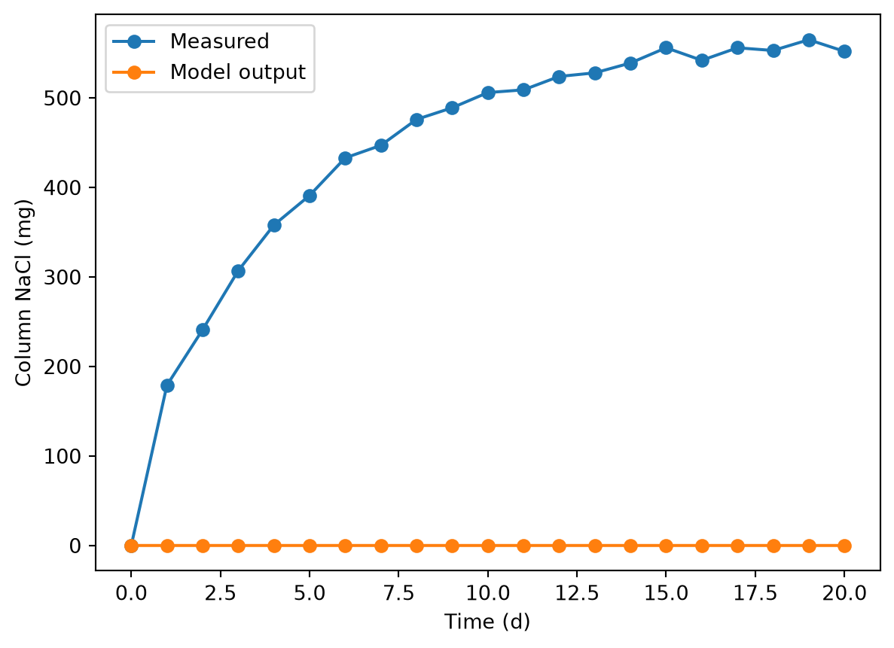

import pandas as pdParameter estimation solution
Let’s get the measurement data.
measdat = pd.read_csv('col_salt.csv')
measdat| time_d | salt_mg | |
|---|---|---|
| 0 | 0 | 0 |
| 1 | 1 | 179 |
| 2 | 2 | 241 |
| 3 | 3 | 307 |
| 4 | 4 | 358 |
| 5 | 5 | 391 |
| 6 | 6 | 433 |
| 7 | 7 | 447 |
| 8 | 8 | 476 |
| 9 | 9 | 489 |
| 10 | 10 | 506 |
| 11 | 11 | 509 |
| 12 | 12 | 524 |
| 13 | 13 | 528 |
| 14 | 14 | 539 |
| 15 | 15 | 556 |
| 16 | 16 | 542 |
| 17 | 17 | 556 |
| 18 | 18 | 553 |
| 19 | 19 | 565 |
| 20 | 20 | 552 |
Seems we have even 1 d spacing in time, which is convenient. We can match that exactly without changing the diff1D() function and align model output and measurements without a merge operation.
We need a function for model residuals.
def res_func(
x,
L,
n,
bc,
ci,
times,
area,
meas_salt
):
"""
Function for calculating residuals for . . .
Parameters
----------
x : float
Guess for values for the D parameter (diffusivity)
. . .
Returns
-------
np.ndarray
Residuals
"""
# Model call
pred = dm.diff1D(
L=L,
n=n,
D=x,
bc=bc,
ci=ci,
t_eval=times
)
# Calculate residuals
mod_salt = (pred['c'] * pred['dx'] * area).sum(0)
res = mod_salt - meas_salt
print(x)
print(sum(res**2))
# Return residuals
return resNow use it. Load our model function.
import diff_mod as dmAnd other modules.
import numpy as np# We need to get least_squares() from the scipy.optimize module
# Normal approach is to get only that function when we just need one
from scipy.optimize import least_squares
lspar = least_squares(
res_func,
x0=2E-9,
kwargs=dict(
L=0.1,
n=10,
bc=[36, 0],
ci=0,
times=np.linspace(0, 20 * 86400, 21),
area=np.pi * (0.02 / 2)**2,
meas_salt=measdat['salt_mg'] / 1e6
)
)
lspar
lspar.x
lspar["x"]
lspar.x[0][2.e-09]
8.605910784588117e-09
[1.69011612e-08]
3.582401165553669e-07
[3.59941725e-09]
4.0607873550676095e-08
[2.39985431e-09]
7.913699703553966e-10
[1.73010155e-08]
3.617318557158784e-07
[2.07583753e-09]
5.345921910946367e-09
[2.31885012e-09]
7.686225047739127e-10
[1.72200113e-08]
3.610370504348189e-07
[2.37607827e-09]
7.185286332299003e-10
[1.72772395e-08]
3.6152855455788685e-07
[2.29507407e-09]
8.892525868159277e-10
[2.35582722e-09]
6.988542016298904e-10
[1.72569884e-08]
3.613549810149006e-07
[2.31532512e-09]
7.826680140262164e-10
[2.34570169e-09]
7.04132705761e-10
[2.35329584e-09]
6.992160747134929e-10
[2.35519437e-09]
6.988851457062138e-10
[2.35566901e-09]
6.988582226321754e-10
[2.35578766e-09]
6.98854974773799e-10
[2.35581733e-09]
6.988543804104891e-10
[2.35582475e-09]
6.988542454184735e-10
[2.3558266e-09]
6.988542125203812e-10
[2.35582706e-09]
6.98854204348974e-10
[2.35582718e-09]
6.988542023094473e-10np.float64(2.3558272173105295e-09)Now see how the value does–validation.
area = np.pi * (0.02 / 2)**2
area0.0003141592653589793pred01 = dm.diff1D(
L = 0.1,
n = 10,
D = lspar.x[0],
bc = [36, 0],
ci = 0,
t_eval = np.linspace(0, 20 * 86400, 21)
)area = np.pi * (0.02 / 2)**2
area0.0003141592653589793salt_mod = (pred01['c'] * pred01['dx'] * area).sum(0)
salt_modarray([0. , 0.00017616, 0.00025333, 0.00031091, 0.00035713,
0.00039481, 0.00042565, 0.00045091, 0.00047161, 0.00048857,
0.00050247, 0.00051385, 0.00052318, 0.00053082, 0.00053708,
0.00054221, 0.00054642, 0.00054986, 0.00055269, 0.000555 ,
0.00055689])mmdat = measdat.copy()And add the model output we processed above.
mmdat['salt_mod_mg'] = salt_mod * 1E6
mmdat| time_d | salt_mg | salt_mod_mg | |
|---|---|---|---|
| 0 | 0 | 0 | 0.000000 |
| 1 | 1 | 179 | 176.161160 |
| 2 | 2 | 241 | 253.326237 |
| 3 | 3 | 307 | 310.907163 |
| 4 | 4 | 358 | 357.134531 |
| 5 | 5 | 391 | 394.808595 |
| 6 | 6 | 433 | 425.654020 |
| 7 | 7 | 447 | 450.913098 |
| 8 | 8 | 476 | 471.612729 |
| 9 | 9 | 489 | 488.570339 |
| 10 | 10 | 506 | 502.465372 |
| 11 | 11 | 509 | 513.850343 |
| 12 | 12 | 524 | 523.178036 |
| 13 | 13 | 528 | 530.821416 |
| 14 | 14 | 539 | 537.083292 |
| 15 | 15 | 556 | 542.214486 |
| 16 | 16 | 542 | 546.418430 |
| 17 | 17 | 556 | 549.863182 |
| 18 | 18 | 553 | 552.685501 |
| 19 | 19 | 565 | 554.998042 |
| 20 | 20 | 552 | 556.892801 |
import matplotlib.pyplot as plt
plt.plot(mmdat.time_d, mmdat.salt_mg, marker = 'o', label = 'Measured')
plt.plot(mmdat.time_d, salt_mod, marker = 'o', label = 'Model output')
plt.xlabel('Time (d)')
plt.ylabel('Column NaCl (mg)')
plt.legend()
Troubleshooting:
- Check units, must match
- Use breakpoint() to check model call inside residuals function
- print(x) or
sum(res**2)etc.
Things to try:
- How much does n cells affect result?
- Did you try different starting values to check for global vs. local minima?